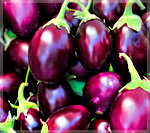

Our products:

- Carrot
- Carrots (Daucus carota) are crunchy root vegetables rich in beta-carotene, fiber, vitamins A, K, and antioxidants. They thrive in cool climates with well-drained, loose soil and are widely used in salads, soups, and snacks for promoting eye health and boosting immunity.

- Indian Eggplant
- Indian Eggplant (Solanum melongena), also known as brinjal, is a small, purple vegetable popular in Indian cuisine. It grows well in warm climates and fertile soil, offering vitamins C, K, B6, fiber, and antioxidants that support brain health and digestion.

- Wheat
- Wheat (Triticum spp.) is a staple cereal crop cultivated worldwide, particularly in temperate climates. It is a primary source of carbohydrates and is used in making bread, pasta, cereals, and flour. Wheat is also rich in fiber, vitamins B and E, and essential minerals.

- Cucumbers
- Cucumbers (Cucumis sativus) are refreshing, hydrating vegetables with high water content. They grow well in warm weather with well-drained soil and provide vitamins K and C, promoting hydration, digestion, and skin health. Cucumbers are commonly used in salads, pickles, and beverages.

- Corn
- Corn (Zea mays), also known as maize, is a versatile crop grown in warm climates. It is a good source of carbohydrates, fiber, vitamins B and C, and antioxidants. Corn is used as a staple food, animal feed, and raw material in various industries, including biofuel production.

- Peppers
- Peppers (Capsicum spp.) come in a variety of colors and heat levels, from sweet bell peppers to hot chilies. They thrive in warm climates and are rich in vitamins A, C, and antioxidants. Peppers add flavor, color, and spice to a wide range of dishes and offer health benefits like boosting immunity and promoting eye health.